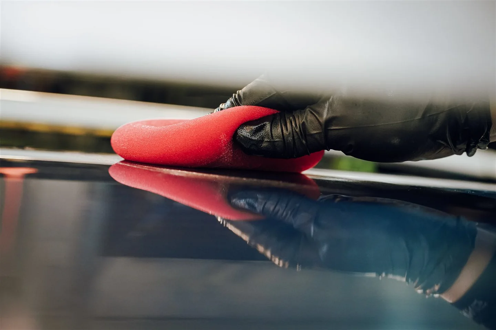
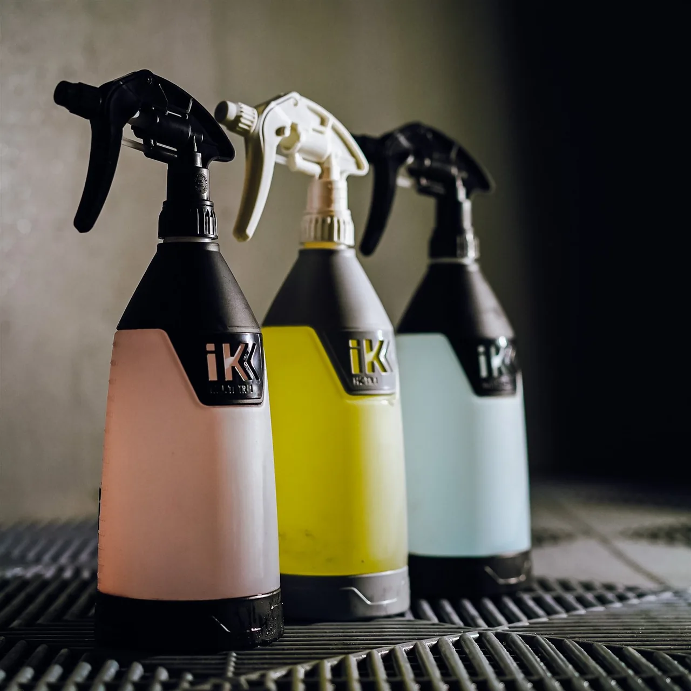
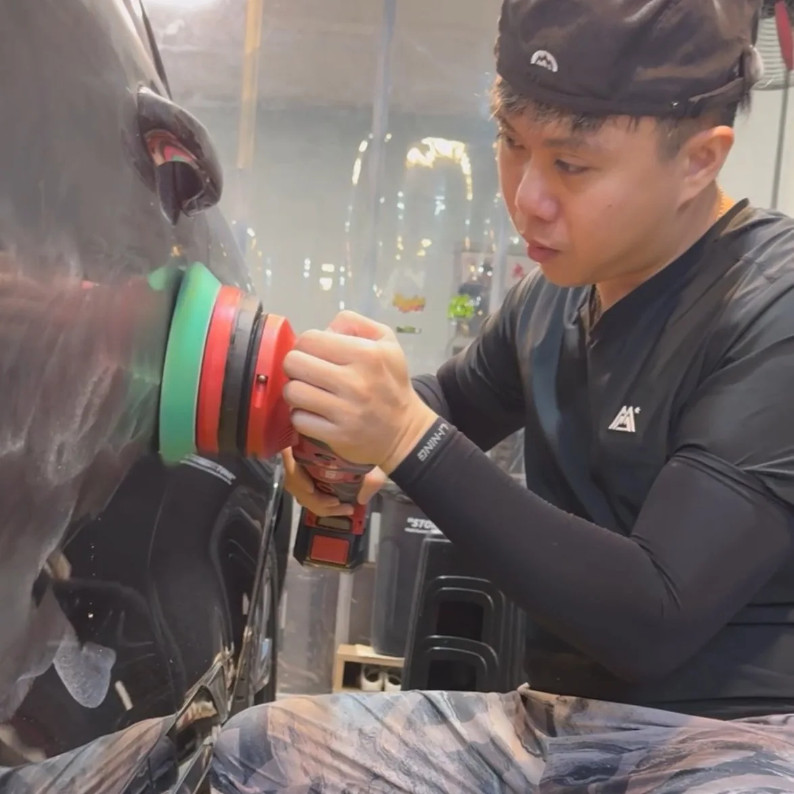
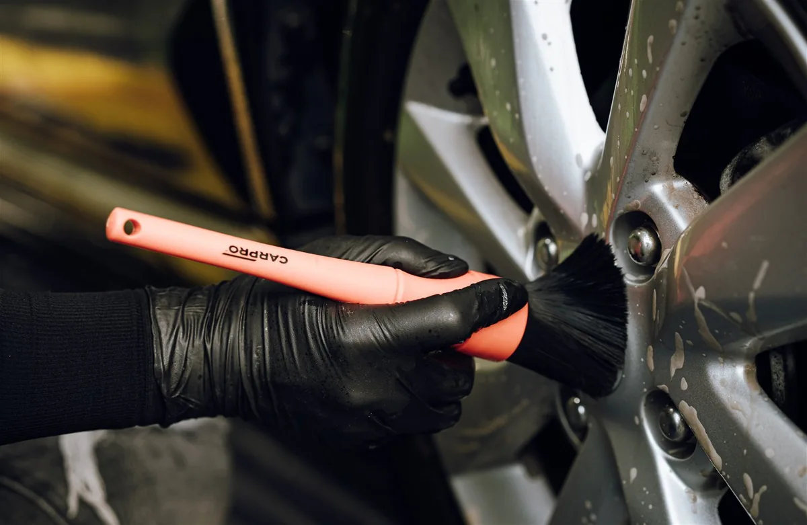
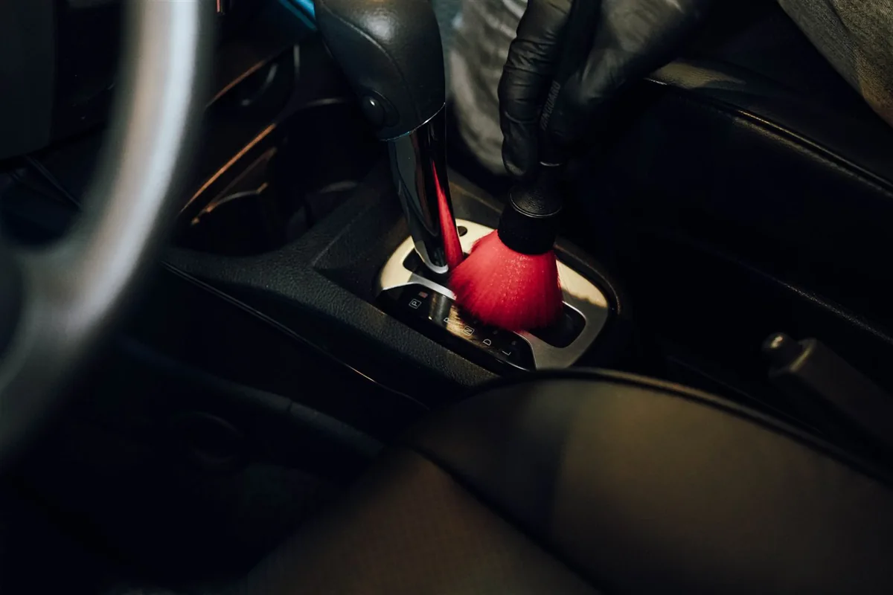

化學處理優先
不同汙染，使用不同藥劑。軟化、溶解，不硬幹帶過。

RESTORE. THEN PROTECT.
汙染日復一日累積，漆面需要的不只是光澤。
分類清潔、必要修復，再依車況建立適當防護。
不做多餘工序，只做對車況真正有益的事。

不同汙染，使用不同藥劑。軟化、溶解，不硬幹帶過。
先充分清潔，再評估拋光。以最少的消耗，換取潔淨的漆面。
使用德國 FLEX 專業拋光設備，依漆況與溫度控制工法。「冷拋光」重視施工分寸，避免過度消耗。

依漆況、部位與安全修復範圍，安排合適工法。
看汙染、停放環境與維護習慣。
預洗、接觸洗與專用藥劑去汙。
清潔後仍有霧化、細紋或嚴重水垢，再評估拋光。
依方案搭配防護，留下下次照護建議。


車身縫隙藏汙納垢，黑色淚痕常從這裡開始。輪框附著汙染、方向盤與按鍵手垢，也值得被好好處理。
先依材質與汙染安排工法，讓外觀到觸感，都有乾淨的理由。
PR 系列依清潔、必要修復與相應防護，整理成五級首次美容方案。後續維護則依實際車況，安排這次需要的處理。
從日常維護到漆面修復，清楚看懂處理深度。
看顯亮、易清潔與維護需求，不只看水珠。
從實際施工影片理解洗車、拋光與鍍膜的處理節奏。
施工完成後，我們會說明本次處理重點、保留問題與後續維護方向。下次回訪前，也可以先透過 LINE 告訴我們近期車況。